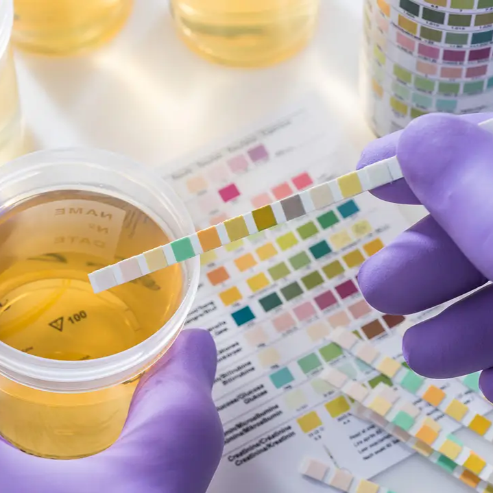

Esta información tiene un carácter meramente informativo. Para obtener asesoramiento o diagnóstico médicos, consulta a un profesional.
La insuficiencia renal es, en la mayoría de los casos, una condición que se puede prevenir o retrasar significativamente si tomamos el control de nuestra salud hoy mismo. Mantener los riñones sanos no solo garantiza una buena filtración de toxinas, sino que protege directamente nuestro corazón y sistema circulatorio.
A continuación, estaremos mencionando cuáles son algunas de las medidas preventivas para la insuficiencia renal
La tensión arterial y la glucosa en sangre son los dos factores que más impactan la salud renal. Una presión elevada actúa como un flujo de agua a demasiada potencia que termina por romper los delicados filtros del riñón; mantenerla en niveles óptimos es la base para evitar tratamientos invasivos como la diálisis. Por otro lado, la diabetes mal controlada es una de las causas principales de daño renal crónico; monitorear el azúcar mediante una dieta saludable y ejercicio regular es fundamental para que el azúcar en la sangre no desgaste la estructura interna de tus riñones.
Mecanismo de daño: Debido a la presión constante, las paredes de las arteriolas desarrollan un engrosamiento defensivo. Sin embargo, este crecimiento ocurre hacia el interior del vaso, reduciendo el diámetro interno. Es como si una tubería se llenara de sarro: la estructura exterior sigue ahí, pero el canal de paso es cada vez más estrecho. Al final, el espacio es tan reducido que el volumen de sangre que logra pasar es insuficiente para oxigenar el tejido renal, provocando la isquemia.
Glomeruloesclerosis: La presión excesiva rompe los capilares del glomérulo, sustituyendo el tejido sano por cicatrices. Una vez que el tejido se cicatriza, la filtración se detiene para siempre.
Prevención: Mantener cifras menores a 120/80 mmHg no solo protege el corazón, sino que reduce la hiperfiltración, permitiendo que las nefronas trabajen a un ritmo relajado y duren toda la vida.
Un elevado Índice de Masa Corporal (IMC) obliga a los riñones a trabajar horas extra. Al haber más masa corporal, los riñones deben filtrar más sangre de la que están diseñados para manejar, un fenómeno llamado hiperfiltración. Con el tiempo, este sobreesfuerzo agota las unidades de filtrado.
Hiperfiltración compensatoria: En personas con sobrepeso, los riñones tienen que filtrar un volumen de sangre mucho mayor para satisfacer las demandas metabólicas del cuerpo excedente. Este esfuerzo constante agota las unidades de filtrado prematuramente.
Adipoquinas e Inflamación: El tejido graso produce sustancias inflamatorias que viajan por la sangre y dañan directamente las células del riñón (podocitos).
Actividad física: El ejercicio no solo ayuda a bajar de peso, sino que mejora la sensibilidad a la insulina y ayuda a que los vasos sanguíneos sean más elásticos, facilitando el trabajo de bombeo del corazón hacia el riñón.
A veces, el daño comienza sin dolor. La proteinuria (presencia de proteína en la orina) es uno de los primeros gritos de auxilio del riñón. Realizar análisis de orina periódicos, especialmente si se padece diabetes o hipertensión, permite identificar fugas de proteína a tiempo. Detectar este signo de forma temprana permite a los médicos ajustar el tratamiento y frenar el daño antes de que sea irreversible.
Toxicidad tubular: La proteína que se filtra no es solo un síntoma, es un veneno. Cuando la albúmina pasa por los túbulos renales (donde no debería estar), genera una reacción inflamatoria y fibrótica que destruye más tejido sano.
Detección precoz: Muchas personas se sienten bien pero ya están perdiendo proteína. Un análisis de Microalbuminuria puede detectar el fallo renal hasta 5 o 10 años antes de que los análisis de sangre comunes (creatinina) muestren un problema.

Uno de los riesgos más silenciosos es el uso indiscriminado de fármacos, especialmente los antiinflamatorios (AINEs) y analgésicos comunes. Muchos de estos medicamentos pueden causar daños tóxicos directos en el tejido renal si se toman sin supervisión o en dosis incorrectas. La regla de oro es simple: siempre consulta a un médico antes de medicarte para asegurar que lo que alivia un dolor no esté dañando tus filtros vitales.
AINEs (Ibuprofeno, Naproxeno, Diclofenaco): Estos medicamentos bloquean las prostaglandinas, que son sustancias que mantienen abiertas las arterias del riñón. Al tomarlos, cierras el grifo de sangre al riñón, provocando una muerte celular por falta de riego.
Antibióticos y Contrastes: Ciertos antibióticos (como los aminoglucósidos) y los contrastes radiológicos pueden causar una Necrosis Tubular Aguda. Nunca deben usarse sin una hidratación adecuada y supervisión médica, especialmente si ya existe un riesgo previo.
Los riñones y el corazón trabajan en equipo. El control de los niveles de colesterol y triglicéridos es esencial porque, cuando la enfermedad renal progresa, el riesgo de sufrir eventos cardiovasculares aumenta. Mantener las arterias limpias y la sangre fluyendo correctamente es, en última instancia, la mejor forma de asegurar que tus riñones reciban el oxígeno que necesitan para seguir funcionando.
Dislipidemia: Los niveles altos de colesterol LDL (malo) y triglicéridos crean placas de grasa en las arterias renales (Estenosis de la arteria renal). Esto reduce el flujo sanguíneo y eleva la presión arterial, creando un círculo vicioso de daño.
Protección integral: Al controlar el colesterol, aseguras que la "tubería" que alimenta a los riñones esté despejada y el flujo de filtración sea constante y limpio.